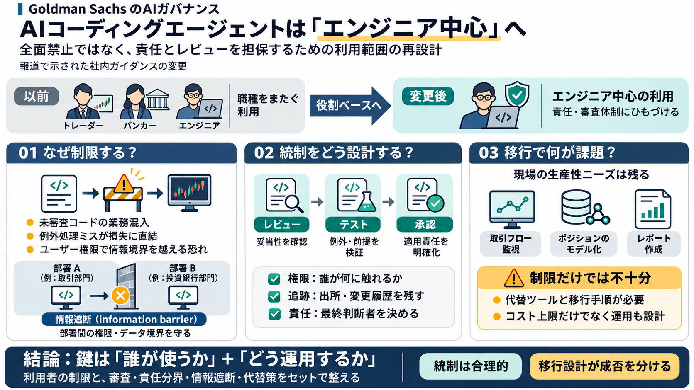

Goldman Sachs pulls AI coding tools from traders and bankers
Nov 2, 2026 Goldman Sachs has cut off most of its employees from advanced AI coding tools like Anthropic's Claude Code …

Nov 2, 2026 Goldman Sachs has cut off most of its employees from advanced AI coding tools like Anthropic's Claude Code …
the right call. A coding agent runs with whatever access its user has, and on a trading desk that means client data and …
For months, Goldman allowed bankers to use Anthropic PBC’s Claude Code and Microsoft Corp.’s GitHub for work. Now, the b…
# Goldman Sachs limits advanced AI coding tools to engineers Goldman Sachs has restricted most traders and bankers from…
# Goldman Sachs ID: lqGompCFuXAa Website: www.goldmansachs.com Headquarters: New York, New York, United States LinkedIn:…